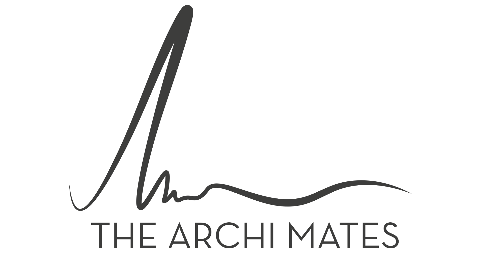
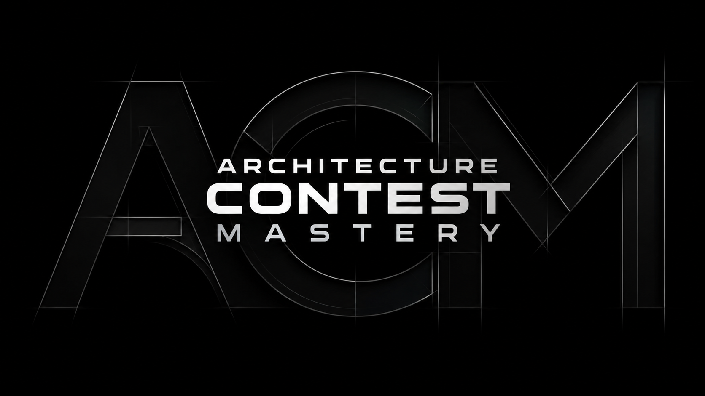
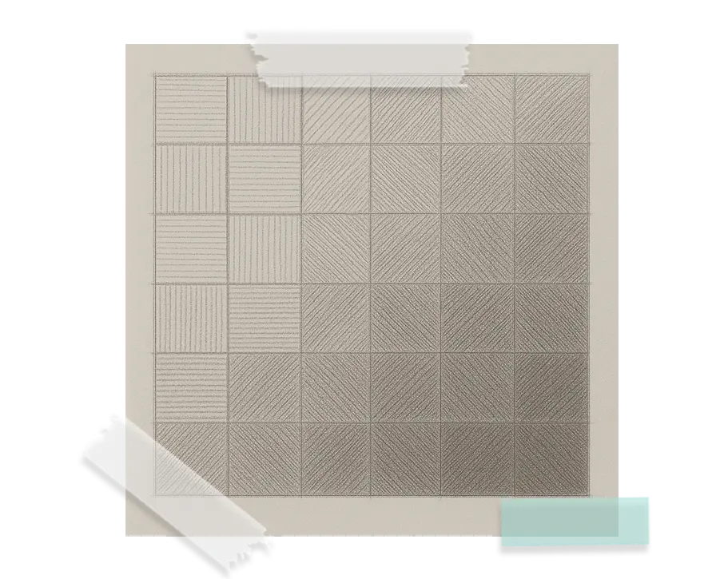
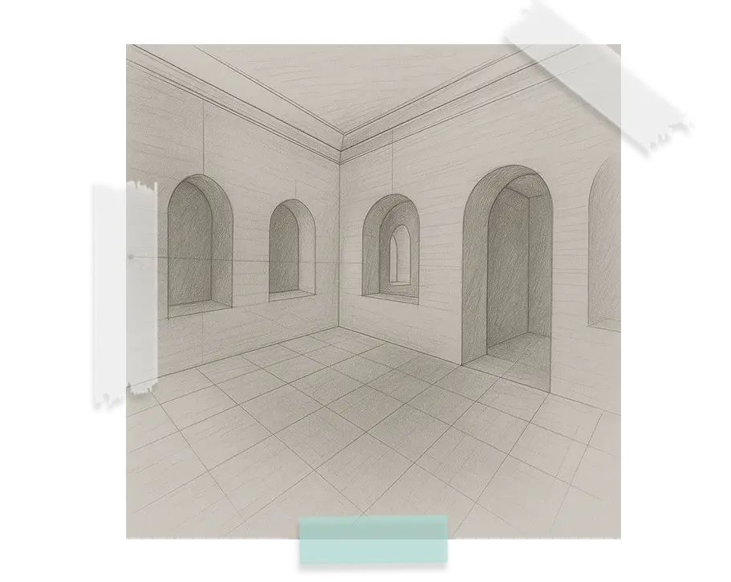
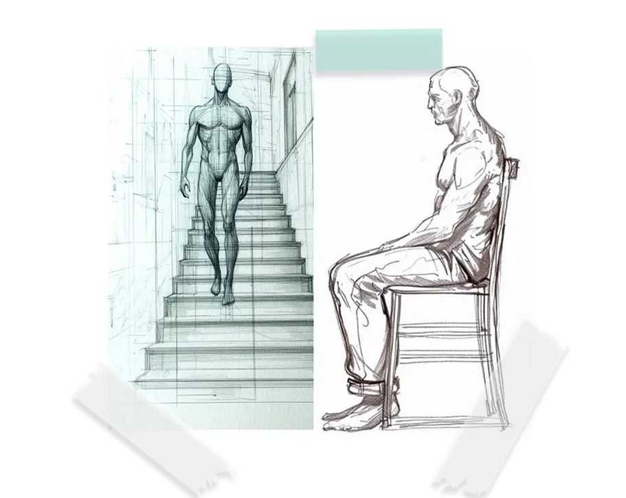
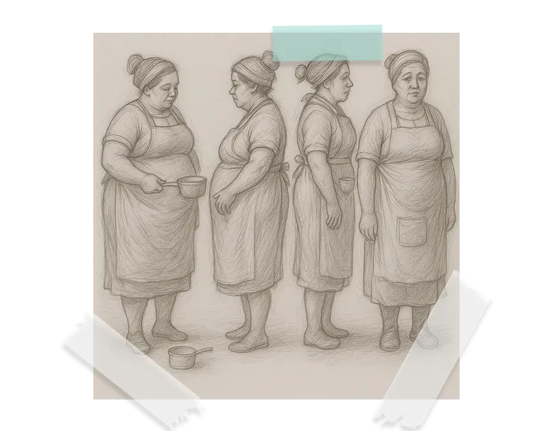
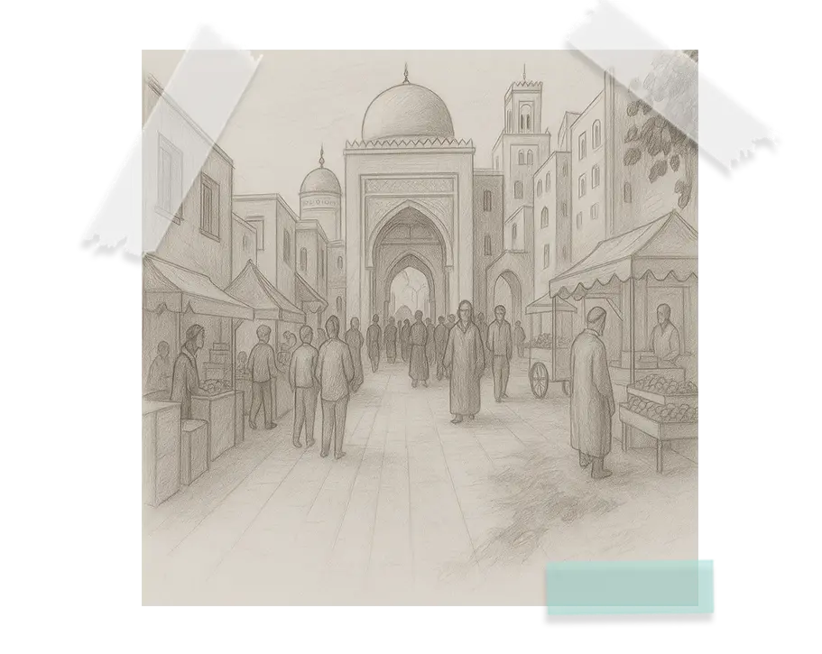
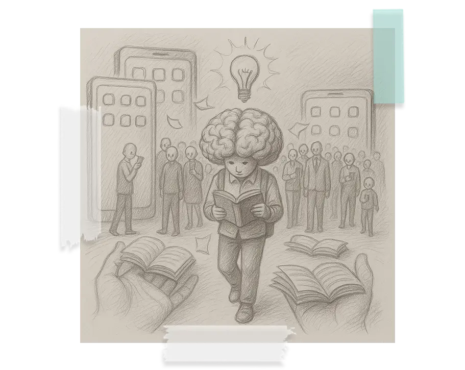
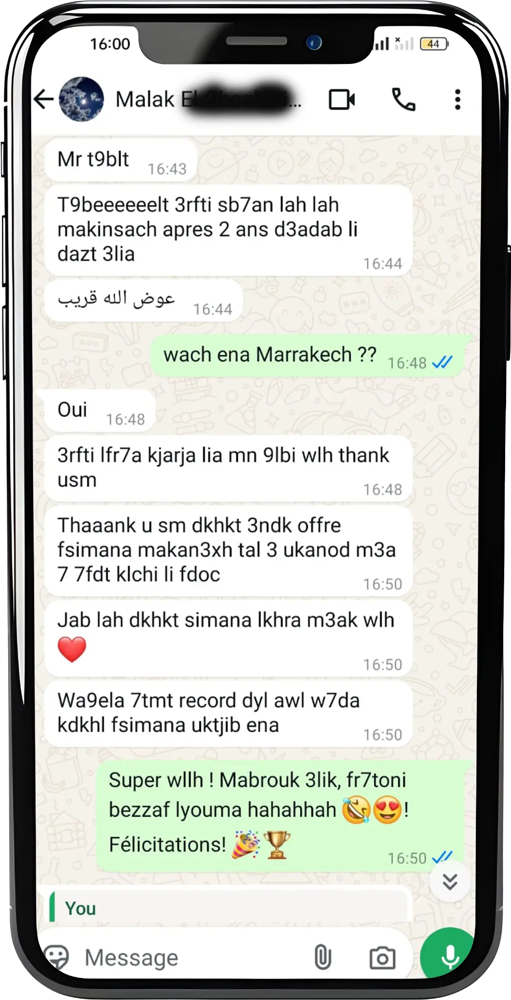

Géométrie & perception
Plans, coupes, façades, échelles, volumes et perspectives.

← Tous les programmesPROGRAMME LE PLUS POPULAIRE · ÉDITION 2027

La préparation complète aux concours de l’ENA, de la SAPD et de l’UIR — même si tu pars de zéro en dessin ou en architecture.
place au classement des bourses d’excellence
Trois étudiantes The Archimates classées dans le Top 10 en 2026.
UNE MÉTHODE ÉPROUVÉE
Architecture Contest Mastery est né de l’expérience d’Ismail Benabdillah, architecte lauréat de l’ENA de Tétouan, combinée aux retours et aux résultats de centaines d’étudiants accompagnés depuis 2019.
Tu progresses pas à pas en architecture, art, géométrie, culture générale, compétences linguistiques et expression graphique.
LES APPRENTISSAGES
Plans, coupes, façades, échelles, volumes et perspectives.
Références historiques, artistiques et architecturales essentielles.
Actualités, villes marocaines et grands enjeux contemporains.
Français et vocabulaire anglais utile pour la SAPD.
Du premier trait aux ambiances et sujets abstraits complets.
CURRICULUM
Préparation mentale · Acte de bâtir · Missions de l’architecte
Glossaire · Histoire · Architectes de renommée · Architecture du Maroc
Glossaire · Histoire de l’art · Artistes et œuvres célèbres · Art marocain
Plans, coupes, façades · Échelles · 3D · Perspective · Astuces de géométrie
Français · Citations · English for Architects
Trait · Volumes · Perspectives · Personnages · Ambiances · Caricatures
Faits divers 2026–2027 · Villes intelligentes · Villes des ENA
Concours ENA depuis 2014 · SAPD · UIR · ENSA Marseille · Concours blancs · Entretien oral
DU PREMIER TRAIT À LA COMPOSITION
Un aperçu illustré des compétences travaillées dans le programme. Sélectionne une image pour la voir en grand.

Maîtriser le trait et construire les valeurs.

Organiser les volumes et la profondeur.

Comprendre le corps humain dans l’espace.

Donner du caractère aux silhouettes.

Réunir architecture et personnages dans une scène.

Traduire un sujet abstrait en dessin.
UN MESSAGE, UNE ADMISSION
Malak partage son admission à l’ENA Marrakech et revient sur sa préparation avec The Archimates.
Lire le témoignage en grand
100% EN LIGNE, JAMAIS SEUL
01 Cours enregistrés et supports PDF
02 Une à deux séances en direct par semaine
03 Corrections personnalisées des exercices
04 Groupe WhatsApp dédié et réponse sous 24 h
05 Accès jusqu’au concours de l’ENA 2027
ARCHITECTURE CONTEST MASTERY
Ton accès au programme et au groupe dédié commence dès la validation de ton inscription.
Rejoindre le programme